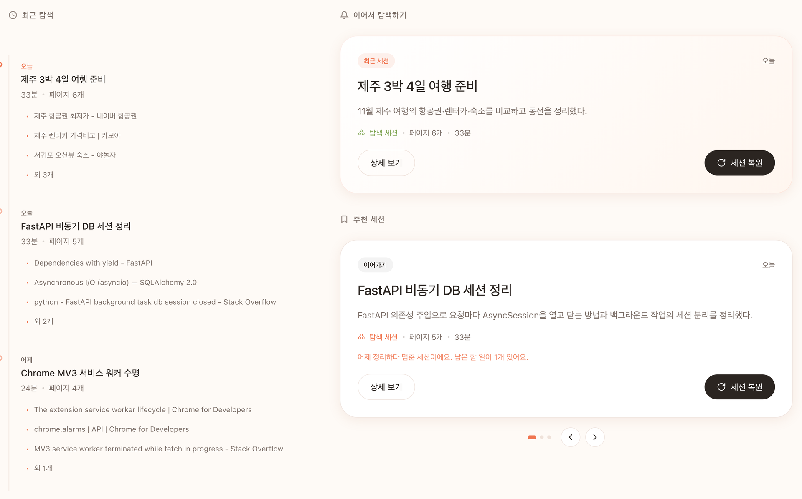
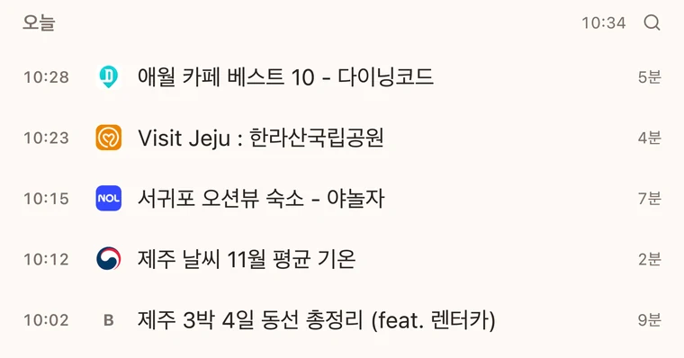
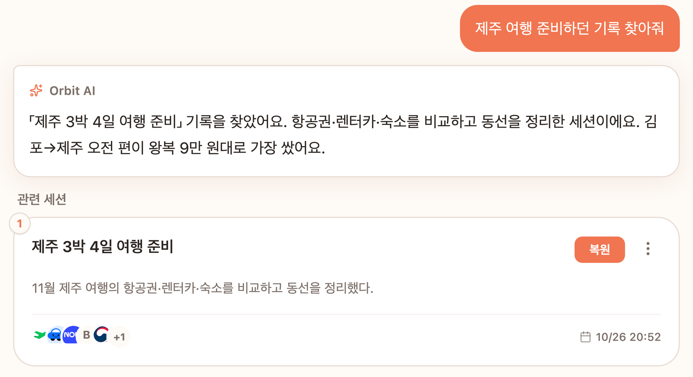
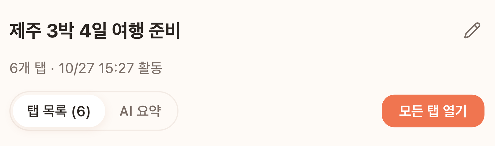
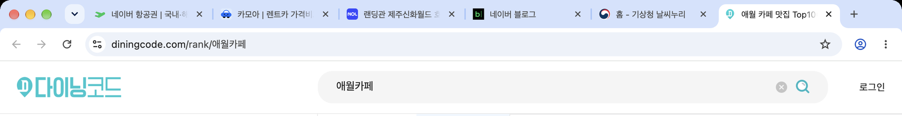
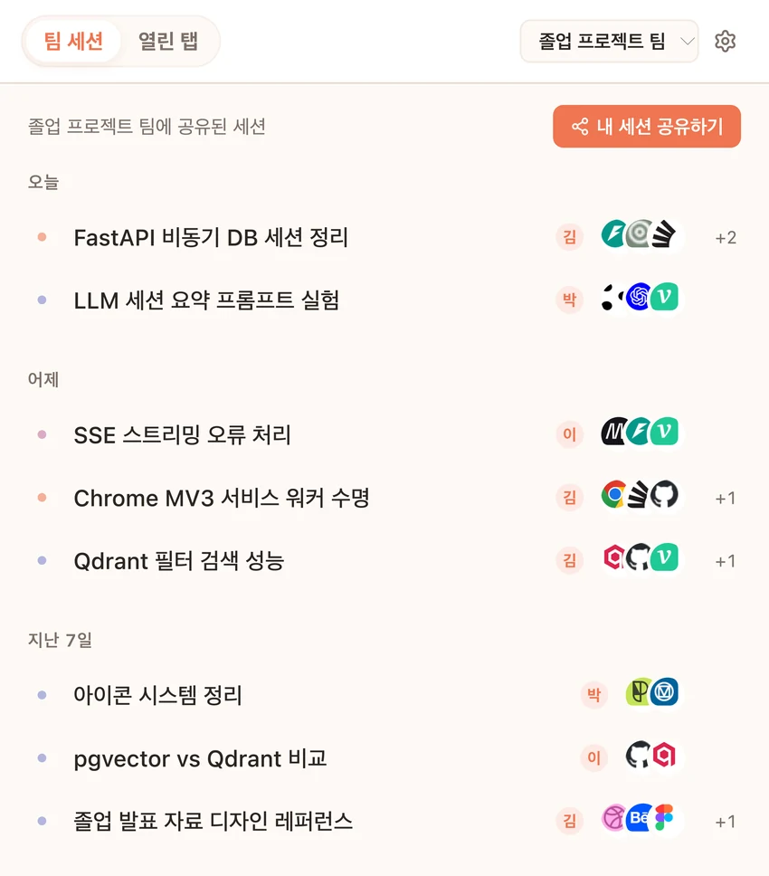
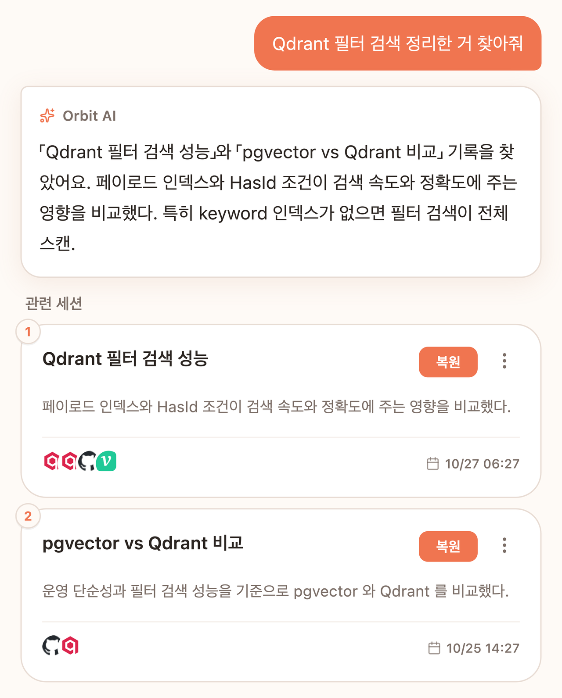

전준
팀대표 · 국립한밭대학교
01 / THE IDEA
열어 둔 탭, 저장한 북마크, 길게 쌓인 방문 기록.
우리가 기억하는 건 주소보다 ‘그때 찾던 것’에
가깝습니다.
Orbit은 방문한 페이지를 탐색의 흐름으로 연결합니다.
필요할 때 기억나는 말로, 그 흐름으로 돌아오세요.
02 / THE EXPERIENCE
기록에서 다시 탐색하기까지,
하나의 자연스러운 흐름.
수집을 켜면 방문한 페이지가 기록되고,
관련 있는 페이지가
탐색 세션으로 정리됩니다.


기억나는 키워드나 내용으로 질문하면,
관련 세션과 전에
봤던 페이지를 찾습니다.

함께 살펴봤던 페이지들을 한 번에 열고,
중단했던 탐색을
다시 이어갑니다.


03 / BETTER TOGETHER
공유하고 싶은 탐색 세션을 골라
팀의 공간으로 가져오세요.
팀원이 모은 기록을 한곳에서 보고,
Team AI로
함께 찾습니다.


시연 데이터로 구성한 실제 제품 화면
04 / THE PEOPLE BEHIND ORBIT
TEAM ORBIT ↗
무엇을 찾았는지, 어떤 페이지로 이어졌는지.
우리는 흩어진 기록
사이의 연결에 집중합니다.
브라우저의 작은 이벤트부터 AI가 되짚는 맥락까지.
탐색을 다시
사용할 수 있는 기억으로 만드는 팀입니다.
팀대표 · 국립한밭대학교
팀원
Chrome Extension으로 탐색 흐름을 기록하고,
익숙한 브라우저
안에 경험을 연결합니다.
페이지와 방문 이벤트를 모아
다시 살펴볼 수 있는 세션으로
구성합니다.
세션의 맥락과 페이지의 내용을 바탕으로
기억나는 말에서 기록을
찾습니다.
2026 인공지능 루키(AI Rookie) 대회 · 국내 AI 트랙 결선 진출